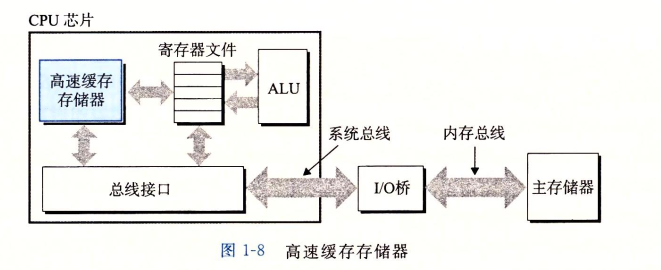

计算机系统中所有的信息——包括磁盘文件、内存中的程序、内存中存放的用户数据以及网络上传送的数据，都是由一连串的比特表示的。区分不同数据对象的唯一方法是
我们读到这些数据时的上下文。比如在不同上下文中，相同的字节序列可能表示一个整数、浮点数、字符串或者机器指令。
为了能够在只能识别0和1的系统上运行程序，每条C程序必须被其他程序转换成为一系列低级机器语言，这些指令按照一种成为可执行目标程序的格式打包好，并以二进制
形式存放在磁盘上。
在Unix系统上，从源文件到目标文件的转换是由编译器驱动程序完成的，整个翻译过程分为四个阶段完成：
.c(源程序文件)——预处理器（CPP）——>
.i（修改了的源程序文件）——（编译器（cc1））——>
.s(汇编程序文件)——（汇编器(as)）——>
.o+C程序库.o(可重定位目标程序二进制)——（连接器(ld)）——>(可执行目标程序[二进制])
为理解程序运行时发生了什么，我们需要了解一个典型系统的硬件组成:
总线
贯穿整个系统的一组电子管道。它携带信息字节并负责在各个部件间传递，通常总线被设计成传送定长的字节块，也就是“字”，字中的字节数（字长）是一个基本的
系统参数，各个系统中都不尽相同。现在大多数机器字长要么是4个字节（32位），要么是8个字节（64位）；
I/O设备
I/O（输入/输出）设备是系统与外部世界的联系通道。每个IO设备都通过一个控制器或者适配器与总线相连。控制器和适配器之间的区别主要在他们的封装方式上，
控制器是IO设备本身或者系统的主印制电路板（主板）上的芯片组。而适配器则是一块插在主板插槽上的卡，他们的功能都是IO总线和IO设备中间传递信息。
主存
主存是一个临时存储设备，在处理器执行程序时，用来存放程序和程序处理的数据。
从物理上来讲，主存是一组动态随机存储器（DRAM）组成的。
从逻辑上来讲.存储器是一个线性的字节数组，每个字节都有其唯一的地址（数组索引），这些地址是从零开始的。一般来说，组成程序的每条机器指令都由不同数量的字节构成。
处理器
中央处理单元（CPU）是解释（或执行）存储在主存中指令的引擎。处理器核心是一个大小为一个字的存储设备（或寄存器），称为程序计数器（PC）,在任何时刻PC
都指向主存中某条机器指令（含有该指令的地址）。
处理器从程序计数器指向的内存处读取指令，解释指令中的位，执行该指令指示的简单操作，然后更新PC,使其指向下一条指令，而这一条指令不一定和在内存中刚刚
指向的指令相邻。
寄存器文件是一个小的存储设备，由一些单个字长的寄存器组成，每个寄存器都有唯一的名字，算术和逻辑单元（ALU）；《计算新的数据和地址值；
CPU指令的一些操作：
加载：从主存复制一个字节或者一个字到寄存器，以覆盖寄存器原来的内容;
存储：从寄存器复制一个字节或者一个字到主存的某个位置，以覆盖这个位置上原来的内容;
操作：把两个寄存器的内容复制到ALU，ALU对这两个字做算数运算，并将结果存放到一个寄存器中，以覆盖该寄存器中原来的内容;
跳转：指令本身中抽取一个字，并将这个字复制到程序计数器（PC）中，以覆盖PC中原来的值;
处理器看上去是他的指令集架构的简单实现，但是实际上现代处理器使用了非常复杂的机制来加速程序的执行，因此，我们将处理器的指令集架构和处理器的微体系
结构区分开来：指令集架构描述的是每条机器代码指令的效果；而微体系结构描述的是处理器实际上是如何实现的；
4、运行程序
初始时，shell程序执行他的指令，等待我们输入一个命令，当shell中键入可执行目标文件时，shell执行一系列命令来加载可执行文件，这些指令将目标文件中的
代码和数据从磁盘复制到主存。（利用直接存取（DMA）技术，数据可以不直接通过处理器而直接从磁盘到达主存）一旦目标文件中的代码和数据被加载到内存，处理
器就开始执行程序的main程序中的机器语言指令，这些指令将结果从寄存器文件中复制到显示器设备，最终显示在屏幕上。
5、高速缓存

一个系统中，磁盘驱动器可能比内存大1000倍，但对处理器而言，从磁盘驱动器读取一个字的开销要比主存中读取的开销大1000万倍，同样，一个典型的寄存器文件
只存储几百字节的信息，而主存可以存储几十亿字节，然而处理器从寄存器文件中读取数据比存主存中读取几乎要快100倍，随着半导体的发展，处理器与主存之间的
差距还在持续增大，正对这种处理器与主存之间的差异，系统设计者采用了更小更快的存储设备，称为高速缓存存储器，作为暂时的集结区域，存放处理器近期可能
需要的信息。高速缓存是用一种叫做静态随机访问存储器（SRAM）的硬件技术实现的，现代许多系统甚至支持三级高速缓存：L1/L2/L3,位于处理器芯片的L1高速缓
存的容量可以达到数万字节，访问速度几乎和访问寄存器文件一样快，L2高速缓存容量可以到达数十万到数百位字节，进程访问L2高速缓存的时间要不访问高速缓存
L1时间长5倍，但燃比访问主存快5~10倍。
高速缓存使得系统可以获得一个更大的存储器，同时访问速度也更快，原因是利用了高速缓存的局部性原理，即程序具有访问局部区域里的数据和代码的趋势。通过
让高速缓存里存放可能经常访问的数据，大部分的内存操作都能在快速的高速缓存中完成。
6、存储设备形成的层次结构
在处理器和较大较慢的设备之间插入一个更小的存储设备的想法已经成为一个普遍的观念。实际上，每个计算机系统中的存储设备都被组成一个存储器层次结构。
这个层次结构中，从上到下，设备的访问速度越来越慢，容量越来越大，每个字节的造价也越来越便宜，寄存器文件在层次结构中位于最顶层，也是第0层L0,然后是三层高
速缓存L1、L2、L3，主存是第四层，以此类推
L0:寄存器————CPU寄存器保存来自高速缓存存储器的字
L1:L1高速缓存（SRAM）————L1高速缓存保存取自L2高速缓存行
L2:L2高速缓存（SRAM）————L2高速缓存保存取自L3高速缓存行
L3:L3高速缓存（SRAM）————L3高速缓存保存取自主存高速缓存行
L4:主存(DRAM）————主存保存取自本地磁盘的磁盘块
L5:本独二级存储（本地磁盘）————本地磁盘保存取自远程服务器上磁盘的文件
L6:远程二级存储（分布式文件系统，Web服务器）
存储层次结构的主要思想是上一层的存储器作为低一层存储器的高速缓存。
7、操作系统管理软件
在程序运行过程中，shell和应用程序都没有访问键盘、显示器、磁盘或主存。取而代之的是他们依靠操作系统提供的服务。我们可以把操作系统看成是应用程序和
硬件之间的一层软件，所有程序对硬件的操作都必须通过操作系统；操作系统的两个基本功能：
防止硬件被失控的应用程序滥用
向应用程序提供简单一致的机制来控制复杂而又通常大不相同的低级硬件程序
操作系统通过一些基本的抽象概念来实现以上两个功能（进程、虚拟内存和文件）：
进程:是对处理器、主存和IO设备的抽象表示
虚拟内存:是对主存和磁盘IO设备的抽象表示
文件:是对IO设备的抽象表示
进程
进程是操作系统对一个正在运行的程序的一种抽象;在一个系统上可以同时运行多个进程，而每个进程都好像在独占地使用硬件。
并发运行：一个进程的指令和另一个进程的指令是交错执行的。
无论单核还是多核系统中，一个CPU看上去都像是在并发地执行多个进程，这是通过处理器在进程间切换来实现的。操作系统实现这种交错执行的机制称为上下文切换。
1、操作系统保持跟踪进程运行所需要的所有状态信息。这种状态也就是上下文。包括许多信息，比如PC和寄存器文件的当前值，以及主存的内容。在任何一个时刻，单处
理器系统都只能执行一个进程的代码;
2、当操作系统决定把控制权从当前进程转移到某个新进程时就会进行上下文切换，即保存当前进程的上下文、恢复新进程的上下文，然后将控制权传递给新进
程。新进程就会从上次停止的地方开始;
3、从一个进程到另一个进程的转换是由操作系统内核管理的，内核是操作系统代码常驻主存的部分。
4、当应用程序需要操作系统的某些操作时，比如读写文件，他就执行一条特殊的系统调用指令，将控制器传递给内核。然后内核执行被请求的操作并返回应用
程序。
5、内核不是一个独立的进程。他是系统管理全部进程所用代码和数据结构集合。
线程
一个进程可以由多个线程的执行单元组成，每个线程都运行在进程的上下文中，并共享同样的代码和全局数据。多线程之间比多进程之间更容易共享数据，线程比进程更高效。
虚拟内存
虚拟内存是一个抽象概念，他为每个进程提供了一种假象，每个进程都在独占地使用主存。每个进程看到的内存都是一致的，称为虚拟地址空间。
文件
文件就是字节序列，每个IO设备，包括磁盘、键盘、显示器、甚至网络都可以看成是文件，系统所有的输入输出都是通过使用一组称为Unix I/O的系统函数调用读写文件来实现的。
8、系统之间通讯
系统之间利用网络进行通信：
从单独的系统看，网络可以视为一个IO设备，当系统从主存复制一串字节到网络适配器时，数据径流网络到达另一台机器，相似地系统可以读取从其他机器发送来的数据，并把数据复制到自己的主存。
其他
超线程：又称同时多线程，是一项允许一个CPU执行多个控制流的技术。它涉及CPU某些硬件由多个备份，比如程序计数器和寄存器文件，而其他的硬件部分只有一份
，比如执行浮点运算的单元，常规的处理器需要大约20000个时钟周期做不同线程间的切换，而超线程的处理器可以在单个周期的基础上决定要执行哪个线程。这使
得CPU能够更好的利用他的处理资源；多处理器可以从两方面提高性能：
1、他减少了执行多个任务时模拟并发的需要；
2、他可以使应用程序运行更快，当然必须要求程序以多线程方式来书写的。